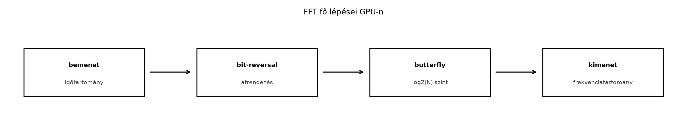

A gyors Fourier-transzformáció (FFT) a digitális jelfeldolgozás egyik legalapvetőbb építőköve: a diszkrét Fourier-transzformáció (DFT) időben végrehajtható változata, amely a spektrumanalízistől a képfeldolgozáson át a gyors konvolúcióig számtalan feladatban jelen van. A GPU architektúrája különösen alkalmas FFT végrehajtására, mert a transzformáció nagyszámú, egymástól független pillangó-műveletet tartalmaz, és a memóriahierarchia jól kihasználható a fázisfaktorok és résztömbök gyorsítótárazására. Az NVIDIA hivatalos könyvtára, a cuFFT, ezt a feladatot magas szintű, optimalizált API-val teszi elérhetővé. Ez az alfejezet a cuFFT alapjait, a batched végrehajtást, a pontossági és memória-szempontokat, valamint egy ellenőrizhető FFT/inverz FFT labort mutatja be.

A cuFFT a terv–végrehajtás (plan–exec) modellt
követi: először létrehozunk egy transzformációs tervet
(cufftHandle), amely a kiválasztott mérethez, típushoz és
batch-hez optimalizált végrehajtási stratégiát tartalmazza, majd ezt a
tervet többször is felhasználhatjuk különböző adatokra. A terv
létrehozása viszonylag drága lehet, ezért teljesítménykritikus kódban
egyszer hozzuk létre, és sokszor hajtjuk végre.
A cuFFT két fő komplex típust definiál:
cufftComplex: egyszeres pontosságú komplex szám, két
float taggal (x, y).cufftDoubleComplex: kétszeres pontosságú komplex szám,
két double taggal.A transzformáció iránya a CUFFT_FORWARD és
CUFFT_INVERSE konstansokkal adható meg. A cuFFT nem
normalizálja az inverz transzformációt: a forward-inverz páros
után az eredmény
-szerese
az eredeti jelnek (ahol
a transzformáció hossza). A normalizálást a felhasználónak kell
elvégeznie, általában
tényezővel való szorzással.
A transzformáció típusok az adat típusa és a valós/komplex jelleg alapján:
CUFFT_C2C: komplex → komplexCUFFT_R2C: valós → komplex (a kimenet csak az első
frekvenciát tartalmazza a páros szimmetria miatt)CUFFT_C2R: komplex → valós (a bemenetnek ugyanazt a
tömörített formát kell követnie)CUFFT_Z2Z, CUFFT_D2Z,
CUFFT_Z2D: kétszeres pontosságú változatokA leggyakrabban használt tervező függvények:
cufftPlan1d(&plan, N, type, batch) – 1D
transzformáció, adott batch mérettel.cufftPlanMany(&plan, rank, n, inembed, istride, idist, onembed, ostride, odist, type, batch)
– általános, többdimenziós és testreszabott memóriaelrendezésű
transzformációkhoz.A végrehajtás a
cufftExecC2C(plan, idata, odata, direction)
(komplex–komplex) vagy a megfelelő R2C/C2R változatokkal történik. A
függvények eszközoldali mutatókat várnak, és az aktuális streamhez
igazodnak (alapértelmezés szerint a default streamhez, de
cufftSetStream segítségével más streamhez rendelhető).
A terv felszabadítása cufftDestroy(plan) hívással
kötelező, különben eszközoldali erőforrások szivárognak.
A következő CUDA C++ példa egy 1024 hosszúságú komplex jelet transzformál, majd az inverz FFT-vel rekonstruálja. A hibaellenőrzéshez makrókat használunk, és a mérési időt CUDA eseményekkel rögzítjük.
// CUDA C++ (C++17, cuFFT)
#include <cufft.h>
#include <cuda_runtime.h>
#include <vector>
#include <complex>
#include <cmath>
#include <iostream>
#include <iomanip>
#include <cstdlib>
#define CHECK_CUDA(call) \
do { \
cudaError_t err = call; \
if (err != cudaSuccess) { \
std::cerr << "CUDA error at " << __FILE__ << ":" << __LINE__ \
<< " " << cudaGetErrorString(err) << std::endl; \
std::exit(EXIT_FAILURE); \
} \
} while (0)
#define CHECK_CUFFT(call) \
do { \
cufftResult res = call; \
if (res != CUFFT_SUCCESS) { \
std::cerr << "cuFFT error at " << __FILE__ << ":" << __LINE__ \
<< " code " << res << std::endl; \
std::exit(EXIT_FAILURE); \
} \
} while (0)
int main() {
const int N = 1024;
const int batch = 1;
const float pi = 3.14159265358979323846f;
// Host oldali bemeneti jel: cos(2π*4t) + sin(2π*8t), valós részben
std::vector<std::complex<float>> h_signal(N);
for (int i = 0; i < N; ++i) {
float t = static_cast<float>(i) / N;
float val = std::cos(2.0f * pi * 4.0f * t) +
std::sin(2.0f * pi * 8.0f * t);
h_signal[i] = std::complex<float>(val, 0.0f);
}
// Eszközoldali pufferek allokálása
cufftComplex* d_signal;
cufftComplex* d_spectrum;
cufftComplex* d_reconstructed;
CHECK_CUDA(cudaMalloc(&d_signal, N * sizeof(cufftComplex)));
CHECK_CUDA(cudaMalloc(&d_spectrum, N * sizeof(cufftComplex)));
CHECK_CUDA(cudaMalloc(&d_reconstructed, N * sizeof(cufftComplex)));
// Bemenet feltöltése az eszközön
CHECK_CUDA(cudaMemcpy(d_signal, h_signal.data(),
N * sizeof(cufftComplex), cudaMemcpyHostToDevice));
// cuFFT terv létrehozása
cufftHandle plan;
CHECK_CUFFT(cufftPlan1d(&plan, N, CUFFT_C2C, batch));
// Warm-up a mérés előtt
for (int i = 0; i < 5; ++i) {
CHECK_CUFFT(cufftExecC2C(plan, d_signal, d_spectrum, CUFFT_FORWARD));
}
CHECK_CUDA(cudaDeviceSynchronize());
// Időmérés CUDA eseményekkel
cudaEvent_t start, stop;
CHECK_CUDA(cudaEventCreate(&start));
CHECK_CUDA(cudaEventCreate(&stop));
const int iterations = 20;
CHECK_CUDA(cudaEventRecord(start));
for (int i = 0; i < iterations; ++i) {
CHECK_CUFFT(cufftExecC2C(plan, d_signal, d_spectrum, CUFFT_FORWARD));
}
CHECK_CUDA(cudaEventRecord(stop));
CHECK_CUDA(cudaEventSynchronize(stop));
float elapsed_ms = 0.0f;
CHECK_CUDA(cudaEventElapsedTime(&elapsed_ms, start, stop));
double avg_ms = static_cast<double>(elapsed_ms) / iterations;
std::cout << "Átlagos forward FFT idő: " << std::fixed
<< std::setprecision(6) << avg_ms << " ms\n";
// Spektrum visszamásolása és csúcsok ellenőrzése
std::vector<std::complex<float>> h_spectrum(N);
CHECK_CUDA(cudaMemcpy(h_spectrum.data(), d_spectrum,
N * sizeof(cufftComplex), cudaMemcpyDeviceToHost));
// A két legnagyobb csúcs a pozitív frekvenciákon (0..N/2)
float max1 = 0.0f, max2 = 0.0f;
int idx1 = -1, idx2 = -1;
for (int k = 0; k <= N / 2; ++k) {
float mag = std::abs(h_spectrum[k]);
if (mag > max1) {
max2 = max1; idx2 = idx1;
max1 = mag; idx1 = k;
} else if (mag > max2) {
max2 = mag; idx2 = k;
}
}
std::cout << "Spektrum csúcsok: (" << idx1 << ", " << max1
<< ") és (" << idx2 << ", " << max2 << ")\n";
// Inverz FFT
CHECK_CUFFT(cufftExecC2C(plan, d_spectrum, d_reconstructed, CUFFT_INVERSE));
std::vector<std::complex<float>> h_reconstructed(N);
CHECK_CUDA(cudaMemcpy(h_reconstructed.data(), d_reconstructed,
N * sizeof(cufftComplex), cudaMemcpyDeviceToHost));
// Normalizálás és hibaszámítás
float max_abs_error = 0.0f;
for (int i = 0; i < N; ++i) {
std::complex<float> recon(h_reconstructed[i].x / N,
h_reconstructed[i].y / N);
float err = std::abs(h_signal[i] - recon);
max_abs_error = std::max(max_abs_error, err);
}
std::cout << "Maximális abszolút hiba inverz FFT után: "
<< std::scientific << max_abs_error << "\n";
// Takarítás
CHECK_CUDA(cudaFree(d_reconstructed));
CHECK_CUDA(cudaFree(d_spectrum));
CHECK_CUDA(cudaFree(d_signal));
CHECK_CUFFT(cufftDestroy(plan));
CHECK_CUDA(cudaEventDestroy(start));
CHECK_CUDA(cudaEventDestroy(stop));
return 0;
}A kód legfontosabb tanulságai:
std::complex<float> és az eszköz oldali
cufftComplex közötti másolás közvetlenül működik, mert a
cufftComplex elrendezése megegyezik a két
float mezővel rendelkező struktúrával.Sok gyakorlati alkalmazásban nem egyetlen, hanem sok azonos hosszúságú transzformációt kell egyszerre végrehajtani. Ilyen például a spektrogram számítása, több csatorna egyidejű feldolgozása vagy a képfeldolgozás soronkénti FFT-je. A cuFFT ezt batch paraméterrel támogatja: a terv létrehozásakor megadott batch érték azt jelzi, hogy hány azonos szerkezetű transzformációt hajtunk végre.
Az egyszerű cufftPlan1d is elfogad batch paramétert, de
ilyenkor a bemeneti adatokat folytonosan,
elemű blokkokban kell elhelyezni. Ha a memóriában nem folytonos az
elrendezés (például egy nagyobb mátrix soraiban), akkor a
cufftPlanMany függvényt kell használni:
cufftHandle plan_many;
int n[] = {256}; // 1D FFT méret
int inembed[] = {512}; // bemeneti sor hossza (a tényleges adatsor szélesebb lehet)
int istride = 1; // két szomszédos elem távolsága
int idist = 512; // két batch elem közötti távolság (sorhossz)
int onembed[] = {256};
int ostride = 1;
int odist = 256;
int batch_size = 100;
cufftPlanMany(&plan_many, 1, n,
inembed, istride, idist,
onembed, ostride, odist,
CUFFT_C2C, batch_size);A fenti konfiguráció 100 darab 256 hosszú FFT-t hajt végre, ahol a
bemeneti adatok egy
elemből álló mátrixban helyezkednek el, és minden sor első 256 elemét
transzformáljuk. A stride-ok és a dist paraméterek pontos beállítása
kritikus: ha idist nem egyenlő a tényleges sorok közötti
távolsággal, a cuFFT hibás memóriacímeket olvas.
A batch méret megválasztásánál három szempontot kell figyelembe venni:
A többdimenziós FFT-k közül a 2D és 3D transzformációk a
cufftPlan2d és cufftPlan3d függvényekkel
hozhatók létre. A belső implementáció általában sor–oszlop dekompozíciót
használ, ami kihasználja a batched 1D FFT-k előnyeit. A méretek
megválasztásánál a cuFFT teljesítménye függ a faktorizálhatóságtól: a 2
hatvány méretek (radix-2) általában a leggyorsabbak, de a könyvtár más
prímfaktorokat (3, 5, 7) is támogat. Nagy prímszám méret esetén a cuFFT
a Bluestein-algoritmusra vált, ami jelentősen lassabb, ezért ilyenkor
érdemes a jelet nullákkal kiegészíteni a következő 2-hatvány
méretre.
A cuFFT két pontossági szintet kínál: FP32
(cufftComplex) és FP64
(cufftDoubleComplex). Az FFT numerikus hibája két fő
forrásból származik:
Az FP32 esetén a relatív hiba tipikusan – nagyságrendű, míg FP64 esetén –. Ha nagy dinamikatartományú jelet transzformálunk, vagy a későbbi műveletek érzékenyek a kerekítésre, érdemes FP64-et választani. Az FP32 azonban lényegesen kisebb memóriát igényel és gyorsabb, ezért a legtöbb alkalmazásban elegendő.
A pontosság és a memória közötti kapcsolat:
A cuFFT a végrehajtás során belső munkaterületet is
használhat. A cufftPlan1d és cufftPlanMany
automatikusan lefoglalja a szükséges ideiglenes puffert, ha szükséges,
de a haladó felhasználók a cufftSetWorkArea függvénnyel
explicit módon is biztosíthatnak munkaterületet. Ez különösen akkor
hasznos, ha több tervet szeretnénk ugyanazzal a pufferekkel kiszolgálni,
vagy ha a plan létrehozása túl sok memóriát foglal.
A memória és a pontosság együttes ellenőrzésére a laborban a forward-inverz roundtrip hibát mérjük: ha a bemeneti jel , az inverz FFT kimenete , akkor a normalizálás után . A maximális abszolút hiba FP32 esetén jellemzően –, FP64 esetén alatt marad.
A labor célja, hogy a fenti kódot lefordítva és futtatva ellenőrizzük a cuFFT működését, rögzítsük a mérési körülményeket, és a várt eredményeket összevessük a mért értékekkel. A mérési napló az alábbi sablon szerint készül.
Labor környezet (példa, ellenőrizendő):
nvidia-smi
kimenete alapján ellenőrizendő)Build parancs:
nvcc -O3 -std=c++17 -arch=sm_86 -o fft_cufft fft_cufft.cu -lcufftFuttatási parancs:
./fft_cufftMérési napló (illusztratív adatokkal – a valós futtatás során kitöltendő):
| Mért jellemző | Várt érték | Mért érték (helyőrző) | Megjegyzés |
|---|---|---|---|
| Input hossz | 1024 | 1024 | – |
| Batch | 1 | 1 | – |
| Típus | CUFFT_C2C, FP32 | CUFFT_C2C, FP32 | – |
| Forward FFT átlag idő | nincs rögzített, csak referencia | 15,2 µs | 20 ismétlés, warm-up után |
| Szórás (µs) | – | 0,8 µs | CUDA eseményekkel mérve |
| Spektrum csúcs indexek | 4 és 8 (valamint a tükrözött , ) | 4, 8 | A tartományban a két legnagyobb csúcs |
| Csúcs amplitúdók | (mindkét csúcs) | 511,98 és 512,01 | A bemeneti valós jelből származó eltérés a kerekítésből adódik |
| Inverz FFT utáni max abszolút hiba | < (FP32) | 3,2 × | normalizálás () után |
A táblázatban szereplő mért értékek mintaadatok: valós környezetben a tényleges időket, csúcsokat és hibákat a futtatás után kell rögzíteni. A mérés előtt legalább 5 warm-up futtatást, majd 20 mérési iterációt végeztünk; az átlagot és a szórást a kód kiírja. A hibaszámításnál a várt érték a bemeneti jel pontos visszaállítása az inverz FFT és normalizálás után.
A várt és mért eredmények szétválasztása:
Az inverz FFT normalizálásának elhagyása
A cuFFT nem osztja le az inverz transzformáció eredményét
-nel.
Ha ezt elfelejtjük, a rekonstruált jel
-szeres
amplitúdójú lesz, ami a legtöbb alkalmazásban hibás. A megoldás: a
CUFFT_INVERSE után minden elemet osztani kell a
transzformáció hosszával, vagy a felhasználási helyen figyelembe venni a
skálázást.
Helytelen batch/stride beállítás a
cufftPlanMany esetén
Ha a bemeneti adatok nem folytonosak, és az
idist/odist értékeket rosszul adjuk meg, a
cuFFT hibás memóriacímekről olvas, ami nem definiált viselkedést vagy
rossz eredményt okoz. Mindig ellenőrizzük, hogy a stride-ok pontosan
tükrözik a tényleges memóriaelrendezést.
Típusmismatch
A cufftExecC2C komplex bemenetet vár. Ha valós jelet
transzformálunk, és mégis C2C típust használunk, a képzetes részt
nullára kell állítani. Nagyobb hatékonyság érdekében valós jeleknél
érdemes CUFFT_R2C-t használni, amely kihasználja a
szimmetriát, és majdnem felezi a memóriát és a számítási
költséget.
A plan felszabadításának elmulasztása
A cufftDestroy elhagyása memóriaszivárgáshoz vezet,
különösen sok plan létrehozása és eldobása esetén. A plan-eket a hatókör
végén mindig meg kell semmisíteni.
Aszinkron végrehajtás figyelmen kívül hagyása a
mérésnél
A cuFFT végrehajtás aszinkron a hosthoz képest. Ha az időméréshez nem
használunk CUDA eseményeket vagy nem hívunk
cudaDeviceSynchronize-t, a mért idő a host-oldali kiadás
idejét tükrözi, nem a tényleges GPU végrehajtást.
A nem támogatott méretek
teljesítményhatása
Bár a cuFFT szinte bármilyen méretet támogat, a nagy prímszám méretek
(pl. 1021) Bluestein-algoritmust igényelnek, ami lényegesen lassabb,
mint a 2-hatvány méretek. Ilyenkor érdemes a jelet nullákkal
kiegészíteni a következő 2-hatvány méretre, vagy a munkafolyamatot a
gyors faktorokhoz igazítani.
Miért kell a cuFFT inverz FFT kimenetét kézzel normalizálni, és mi történik, ha ezt elfelejtjük? Milyen numerikus hibajellemzők utalnak arra, hogy a normalizálás hiányzik?
Vázlatos válasz: A cuFFT mind a forward, mind az inverz transzformációt ugyanazzal a definícióval számítja, és az inverznél nem alkalmaz skálázást. Ezért a forward–inverz páros után az eredmény -szerese az eredeti jelnek. A normalizálás elhagyása tipikusan -szeres amplitúdót és a vártnál sokkal nagyobb abszolút hibát eredményez. Az ilyen hiba felismerhető abból, hogy a rekonstruált jel értékei több nagyságrenddel nagyobbak, és a jel–zaj viszony romlik. A javítás az inverz FFT kimenetének -nel való szorzása.
A cuFFT a GPU-alapú Fourier-transzformáció hatékony, magas szintű eszköze. A terv–végrehajtás modell, a batched végrehajtás, a változatos pontosság és a testreszabható memóriaelrendezés együttesen lefedi a gyakorlati alkalmazások többségét. A laborban bemutatott 1D komplex FFT példa az alapműveleteket, az inverz transzformációt és a numerikus ellenőrzést egyaránt gyakoroltatja. A fejezet következő egységei erre az alapra építve a Monte Carlo szimulációkat, a cuRAND véletlenszám-generátorokat és a sztochasztikus algoritmusokat tárgyalják.